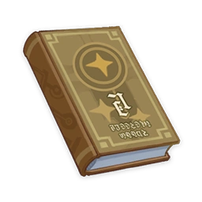

Mondstadt · Books & Literature
Breeze Amidst the Forest
This two-volume Mondstadt collection pairs a ballad anthology that warns of bards’ unreliable histories with Jacob Musk’s account of Dvalin and the Four Winds. Its tale of Durin conflicts with a later in-game date, making the book valuable as literature and cultural memory rather than a self-sufficient chronology.

Two volumes, two kinds of record
Breeze Amidst the Forest is a Mondstadt book collection with two volumes. Volume I, Ballad Selection Excerpt, is presented as a collection of ballads compiled from songs by Mondstadt bards. Volume II is the Breeze Amidst the Forest Supplement: The Dragon Tome; its surviving text is an excerpt from An Investigation into the Cultural Customs of the Wind Kingdom, also known as Records of Customs and Culture, by Jacob Musk.
The first volume’s opening also says that Breeze Amidst the Forest and Breeze Upon the Lake make up a two-volume collection of narrative poems, while the Dragon Tome calls itself a supplement to that ballad selection. These are descriptions inside the book and game catalog, not evidence of an extra third item. The volumes have different acquisition paths: a dialogue branch with Six-Fingered José gives the ballad excerpt, while Lisa gives the Dragon Tome during the Prologue Archon Quest subquest Sparks Amongst the Pages. The first is literary folklore; the second is framed as a scholarly cultural account.
The anthology warns readers about bardic history
The compilers say that bards may embellish or fabricate history to entertain an audience. They describe most bardic works as having low credibility, while crediting their imagination and rhetoric for their survival. This warning comes from the book itself and should guide how its narrative poems are read.
A song can preserve how Mondstadt remembers an event without serving as a neutral eyewitness report. That distinction matters especially when the volume later retells Dvalin’s origin and his battle with Durin.
The Wind Dragon meets the Windborne Bard
The first ballad imagines the Anemo-graced Wind Dragon descending from the heavens and trying to understand people. Villagers fear him, mourners do not explain their grief, and farmers curse him after he damages their orchard. The young dragon is confused by these encounters but keeps exploring.
The dragon eventually hears the Anemo Archon’s lyre and meets the Windborne Bard. The song says that he stays beside the bard, learns human speech and singing, and is later regarded as one of Mondstadt’s Four Winds. The tale gives a poetic account of Dvalin’s bond with Barbatos; its wondrous origin imagery remains part of a self-described bardic tradition, not a separate factual biography.
The battle with Durin in the ballad
The volume shifts to a second song about the lost Khaenri’ah Kingdom and the fall of the Eclipse Dynasty. It names Gold, says Durin rises from the sea and threatens Mondstadt, and describes the Windborne Bard calling Dvalin to defend the city. Dvalin wins but ingests Durin’s poisonous blood and falls into a deep slumber.
The poem connects the dragon’s sacrifice to the catastrophe and to Mondstadt’s memory of Dvalin as a protector. Because the anthology has already cautioned that bards reshape history, its imagery should be compared with later quest accounts rather than treated as a complete account of the battle.
Jacob Musk’s account of the Four Winds
The Dragon Tome excerpt attributes its source to Jacob Musk’s study of the Wind Kingdom’s cultural customs. It lists the Wolf associated with the Knight of Boreas, the Lion associated with the Lionfang or Dandelion Knight, the Falcon of the Knights of Favonius, and the Wind Dragon Dvalin as the Four Winds.
Musk’s excerpt says the tradition took shape after the Lionfang Knight liberated Mondstadt and the Knights of Favonius were established. It also says Dvalin predates that institution and tradition. These are claims made by the in-world cultural account; they should not be expanded into claims that the Four Winds were always a fixed group of four dragons or that every symbolic title had a single, unchanged bearer.
The one-hundred-year date conflicts with later dialogue
The Dragon Tome opens its crisis account by dating Mondstadt’s period of chaos approximately one hundred years ago, then describes Durin’s assault during that period. Lisa’s later dialogue in The Magic Known as Storytelling instead places the Dragonspine battle five hundred years ago, during the Khaenri’ah Cataclysm. The game gives no explanation for the book’s different date, so the two statements should not be silently merged into one chronology.
The same volume includes a parenthetical citation of unknown origin that describes the Knights learning that Stormterror was Dvalin only after repeated clashes and says Dvalin had awakened from a hundred-year slumber. Its own label leaves the citation’s source uncertain. The passage is evidence for what this supplement preserves, not enough to override the later quest’s explicit date.
Stormterror, a censored poem, and two Durins
The Prologue quest shows the Knights confronting Dvalin under the name Stormterror and later recognizing him again as one of the Four Winds. This gives a useful comparison for the supplement’s unattributed note, but it does not establish who wrote that note or when it was added.
In The Magic Known as Storytelling, Lisa discusses a poetry collection whose title is erased in the quest text. She says one poem retells the five-hundred-year-old battle by portraying Durin as an innocent child and that the Knights banned the collection. The quest never names the collection as Breeze Amidst the Forest, so the parallel with this anthology’s Durin ballad should remain a comparison rather than a confirmed identification. The quest also distinguishes the present storybook Durin from the ancient Dragonspine dragon.
How the collection can be used
The collection preserves several layers of Mondstadt’s memory: a compilation of songs that admits its bards are unreliable, a stylized story about Dvalin and Barbatos, and Jacob Musk’s cultural account of the Four Winds. Their different forms explain why the book is useful for lore while also requiring comparison with current quest dialogue.
The safe conclusion is that these texts connect Dvalin to the Four Winds and to the defense of Mondstadt, while preserving a date for the Durin battle that conflicts with later dialogue. The ballad’s account of a dragon’s inner life, its poetic origin imagery, the unknown citation’s source, and the identity of the censored collection remain questions the book alone cannot settle.
This is an original CoreGG reading guide, not an official HoYoverse article or a reproduction of the game text. Source links below identify the records used so you can check the original context.
Sources & references
Check these sources for the original game text and reference trail.
- Genshin Impact Books · English in-game text transcription
- HoYoWiki · Dragon Tome item description and source quest
- Genshin Impact Wiki · book record and Volume I text
- The Magic Known as Storytelling · Lisa’s dialogue about Durin and the erased-title poetry collection
- Song of the Dragon and Freedom · Prologue Archon Quest transcript
- Teyvatica · book analysis and source comparison
- HoYoWiki · Books index
- HoYoverse · In-game Books Archive